MSI · Internacional
En resumen
Los 15 primeros de los 57 jugadores que la MSI (Internacional) tiene en el leaderboard, ordenados por el Elo de su mejor cuenta y medidos cuenta por cuenta, porque sus jugadores no están todos en el mismo servidor. La tabla va de Challenger · 3039 LP a Challenger · 2050 LP. Medido el 2026-09-03.
| # | Jugador | Equipo | Rol | Elo | Victorias | KDA |
|---|---|---|---|---|---|---|
| 1 | 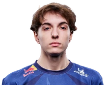 Caliste |
KC | Bot | Challenger · 3039 LP | 62 % de 782 | 3.57 |
| 2 | 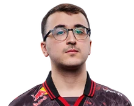 SkewMond |
G2 | Jungle | Challenger · 2859 LP | 60 % de 1055 | 4.27 |
| 3 | Hans Sama | G2 | Bot | Challenger · 2771 LP | 60 % de 757 | 3.10 |
| 4 | 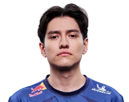 Yike |
KC | Jungle | Challenger · 2737 LP | 59 % de 795 | 2.79 |
| 5 | Busio | KC | Support | Challenger · 2665 LP | 61 % de 791 | 3.86 |
| 6 | 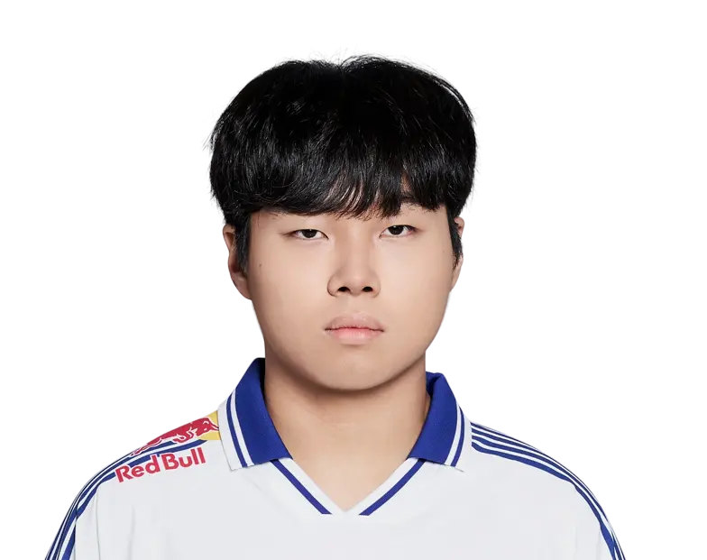 kyeahoo |
KC | Mid | Challenger · 2605 LP | 65 % de 685 | 3.48 |
| 7 | Zeka | HLE | Mid | Challenger · 2519 LP | 56 % de 570 | 2.79 |
| 8 | Peyz | T1 | Bot | Challenger · 2487 LP | 54 % de 824 | 2.49 |
| 9 | 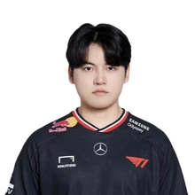 Gumayusi |
HLE | Bot | Challenger · 2423 LP | 55 % de 846 | 2.54 |
| 10 | 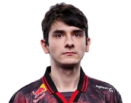 Labrov |
G2 | Support | Challenger · 2360 LP | 59 % de 851 | 3.04 |
| 11 | Dire | TSW | Mid | Challenger · 2205 LP | 53 % de 1000 | 2.51 |
| 12 | Kanavi | HLE | Jungle | Challenger · 2123 LP | 57 % de 604 | 2.46 |
| 13 | 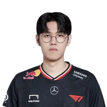 Oner |
T1 | Jungle | Challenger · 2098 LP | 53 % de 731 | 2.89 |
| 14 | 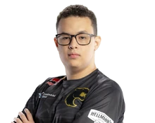 Ayu |
FUR | Bot | Challenger · 2074 LP | 65 % de 531 | 3.35 |
| 15 | Zeus | HLE | Top | Challenger · 2050 LP | 54 % de 608 | 2.27 |
De esta liga se publica el Elo, no el Riot ID: las cuentas con nombre se indexan cuando un servidor sigue la liga, y ahora mismo eso está hecho en la LEC.
Cuántos de los jugadores de la MSI tienen cada campeón entre los que más juegan: Ambessa lo llevan 17, que es el más extendido de la liga. Es presencia, no partidas — el leaderboard dice qué juega cada uno, no cuántas veces.
| Campeón | Jugadores que lo llevan | El de más Elo que lo juega |
|---|---|---|
| Ambessa | 17 | Kanavi |
| Ezreal | 16 | Caliste |
| Jayce | 14 | Yike |
| Bard | 13 | Busio |
| Anivia | 11 | Busio |
| Yunara | 10 | Caliste |
| Camille | 8 | Busio |
| Jhin | 8 | Caliste |
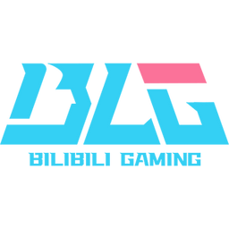
BLG BLG
G2 G2 Esports5 jugadores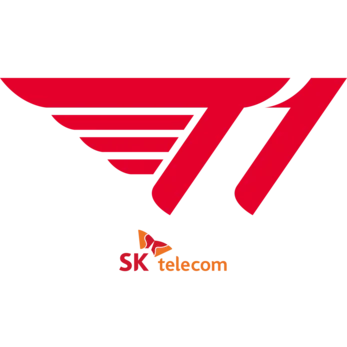
T1 T1Caliste (KC, Bot), con Challenger · 3039 LP. Es el más alto de los 57 jugadores de la MSI que JetaDirectaBot tiene indexados.
57 jugadores en 11 equipos, con unas 196 cuentas de SoloQ entre todos: una media de 3.4 cuentas por jugador. Sale de contar el leaderboard de la MSI, no de una estimación.
Sí. JetaDirectaBot avisa en tu canal de Discord con el campeón, el rol, el Elo y el equipo del jugador de la MSI en cuanto empieza la partida, sin que tengas que pedir nada.
BLG (BLG), DCG (DCG), FUR (FUR), G2 Esports (G2), HLE (HLE), Karmine Corp (KC), LYON (LYON), T1 (T1), TES (TES), TLAW (TLAW), TSW (TSW).
En varios: la MSI (Internacional) reúne jugadores de regiones distintas, así que el servidor se resuelve cuenta por cuenta en vez de asumir uno para toda la liga. Es la razón por la que un jugador de esta liga puede aparecer con el rango de un servidor y jugar en otro.
JetaDirectaBot publica este aviso en tu canal de Discord —o en tu chat privado— en cuanto el jugador entra en partida, con las 20 ligas del catálogo. Gratis.
El plan gratuito sigue una liga; hasta 4 con los de pago, que es el techo real por el cupo de peticiones de Riot.